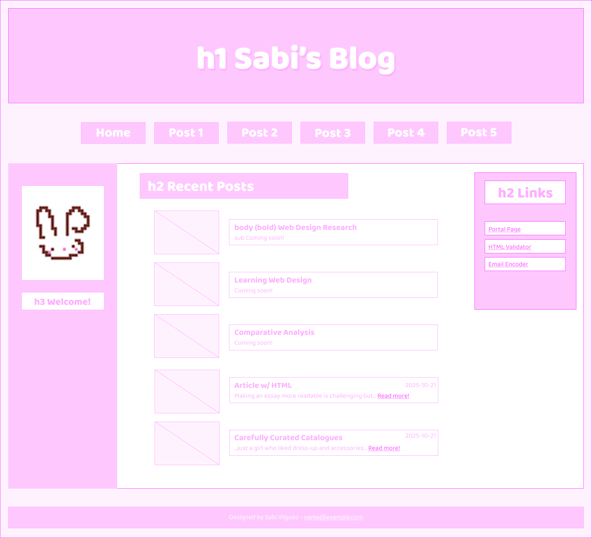
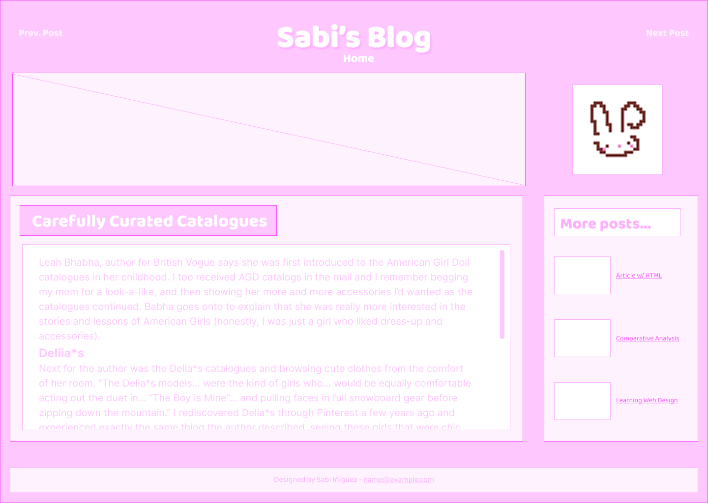
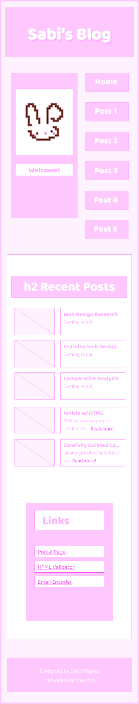
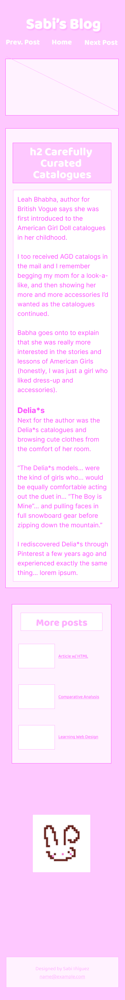

Indie Blog Design
Challenge: Create a blog using responsive design.
Solution: Design a fun, personalized blog using bright, feminine pinks and cute fonts, as well as some pixel art here and there.
Desktop Version
Homepage

Blog Entry Page

Mobile Version
Homepage

Blog Entry Page
